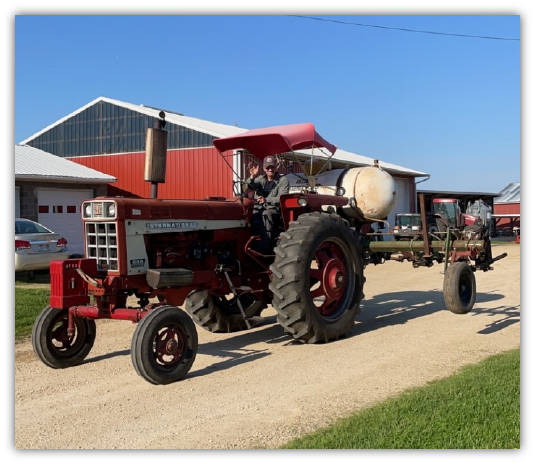
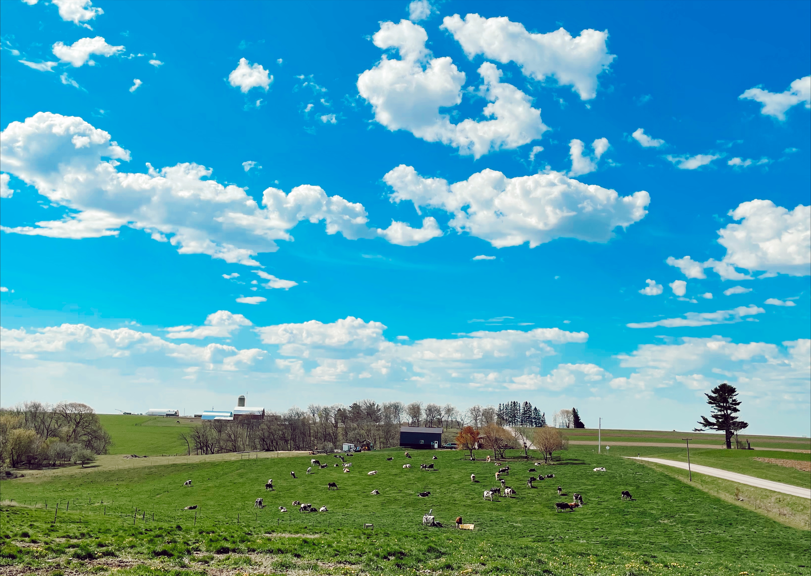
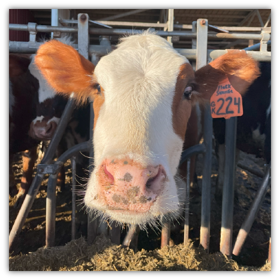

Our Practices
  Organic Dairy Farming
Organic farming is a practice that resembles how the first homesteaders who moved here farmed. It’s natural and includes no chemical or genetically modified products. Organic farms can’t use unapproved chemicals or pesticides but can use approved fertilizers. These products are approved by independent inspectors and the USDA. Our farm transitioned from conventional to organic farming due to Gerald getting diagnosed with Hodgkin’s Lmphoma in 1988. Because of this, we wanted to look for a better alternative for farming, which didn’t include exposure to chemicals. A unique organic farming practice we use is flaming, which uses a nitrogen and an ignitor to create a flame which burns weeds. You can see an image of it above.
Sustainability
Sustainable farming is something Klinkner Breezy Acres is passionate about. We strive to leave the land better than we found it. There are multiple sustainability practices we use on our farm. Contour Strip Cropping: growing crops in a systematic arrangement of strips along contours of field Grass Waterways: Used to convey runoff from concentrated flow without causing erosion Headlands: End of field that doesn’t get plowed to minimize crop damage Flood Retention Dams: Dam dulit to catch surgace runoff and regulate water flow Rip Wrap: Large rocks placed in corners of creek banks to avoid erosion Earthen Manure Pit: Natural manure storage system to avoid hauling manure all year long Pollinator Habitats: Leave areas of vegetation and pollinating plants along fences Plant Trees: Replace trees that have fallen, died or been cut down to replenish tree population Graze Animals: Cattle eat grass in pasutres to help maintain the vegetation
Cross-Breeding
Cross-breeding is a practice that we started in 2010. We started by researching cross-breeding and got our first round of Fleckvieh semen from Global Genetics. Fleckvieh is a German cattle breed which are known for their high milk production, meat quality, and calving ease. The cross-breeding process starts with us breeding our Holsteins with European breeds, like Fleckvieh, to get hybrid cattle to have less inbreeding, improve grazing, increase meat quality and enhance milk production. We then breed the cross-bred cattle back to Holstein to start cycle over again. Since starting in 2010, we have implemented four European dairy cattle breeds: Fleckvieh, Normande, Montbeliarde, and Swedish Red. Our farm has had good luck with our cross-bred cattle. They graze well, produce quallity milk, have less foot and leg problems and calve with more ease.